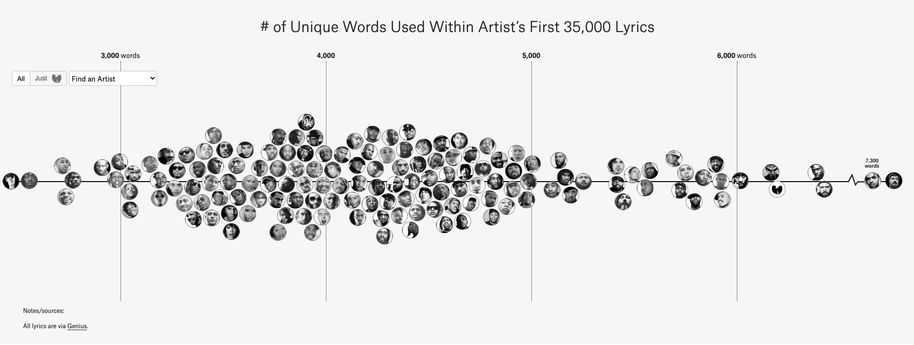

With 75 new rappers including Brockhampton, Death Grips, Lil Uzi Vert, Travis Scott, and Migos.
This project was originally published in 2014 and recently updated in January 2019 with newer lyrics data and 75 additional artists, including Lil Uzi Vert, Lil Yachty, Migos, and 21 Savage.
It compares the number of unique words used by some of the most famous artists in hip hop (that is, an example of a quantitive view of lyricism, once proposed by Tahir Hemphill). I used each artist’s first 35,000 lyrics. This way, prolific artists, such as Jay-Z, can be compared to newer artists, such as Drake.
35,000 words covers 3 to 5 studio albums and EPs. I included mixtapes if the artist was short of the 35,000 words. Quite a few rappers don’t have enough official material to be included (for example, Biggie, Chance the Rapper, Queen Latifah, and El-P).
Since the original release, there’s now a notable trend of fewer unique words among newer artists. This is easier to see in the following chart, where I highlighted each artist’s primary decade, based on album release dates for their vocabulary calculation (the first 35,000 lyrics).